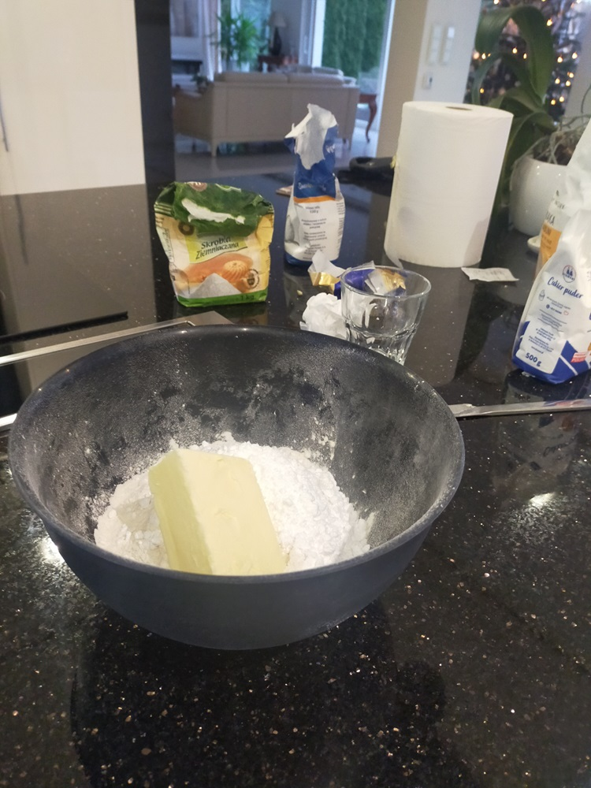
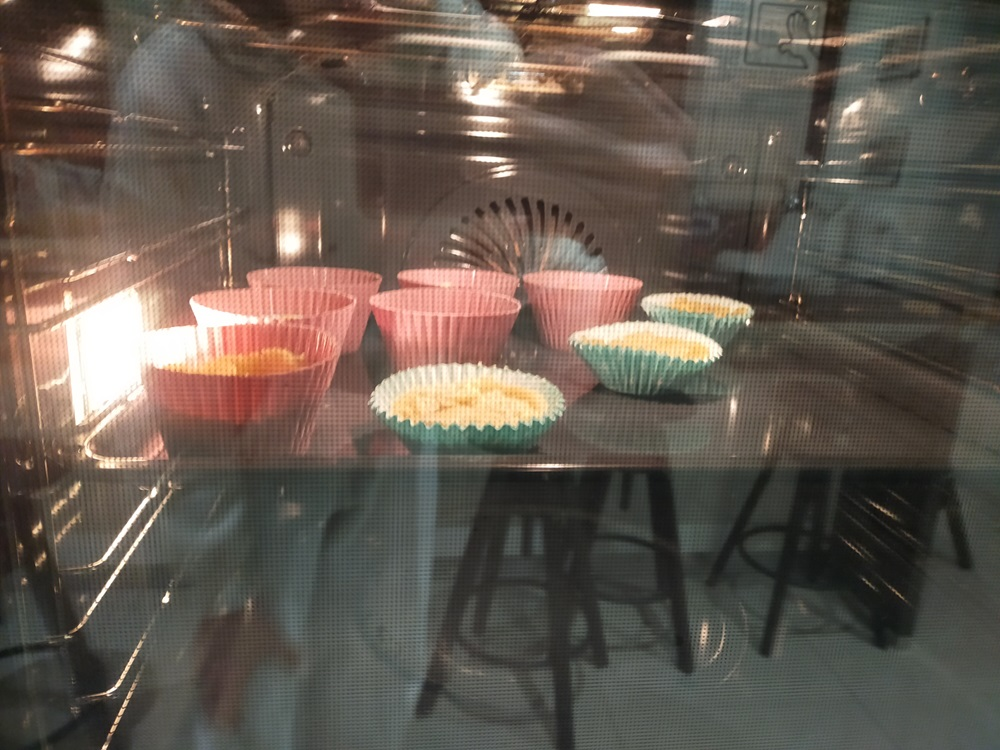

My name is Maja, but you can call me Majka, or Motornicza, or TramDriver, or whatever !!! Idrc.
I'm a <18 year old sapphic (bi) trans demigirl (she/they (would've guessed))
I was born in Poland and I've lived here my whole life (I'm not helping the stereotype am I?),
hejka jak się macie  .
.
Games? What Games do I play?
Well, the last game that I played while editing this paragraph was Colony Survival - Game about making your own colony -
(I couldn't believe myself, really) - kinda similiar to Minecraft because of its blocky style - and
Awaria - Peak game made by the guy who created Helltaker,
it's free on steam so go play it ⛈️NOW⛈️ !!!
I 100% Awaria, got the cupcake recipe, and actually baked the cupcakes (I REALLY like baking and cooking).

Apart from that I'm currently 100%'ing Celeste (wow. I really am the stereotype, huh?);
I like playing Minecraft and Lethal Company with my friens every now and then.
When I'm bored typically I either binge watch youtube, or play sandbox games,
like PPG, GMod, S&Box, or Brick Rigs.
Music! I love music! who doesn't?
I can't really explain what kind of music i listen to because its just so random.
Also, you know, I'm Polish, I mostly listen to Polish music :p
❗BUT❗
I do have a last.fm :3
Maybe I'll add some things here later, idk :P